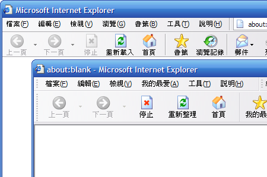

擴充套件及佈景主題
您就是想與眾不同，即便是瀏覽器也要長得不一樣！Mozilla Firefox 支援佈景主題功能，您可安裝各國設計師的作品。這可不只是換個圖示罷了，Firefox 的自訂功能堪稱軟體界的佼佼者，也就是說設計師甚至能更動瀏覽器的介面。
Firefox 強調的「簡單不囉唆」深得您心，但有時就是希望能多那麼一兩種功能？優異的擴充能力讓這一切成真：網頁設計師可以下載 Web Developer 套件，提升網頁編寫／測試的速度；喜歡邊上網邊聽音樂的朋友可以下載 FoxyTunes，在 Firefox 的介面中操控您的播放軟體...... 全球程式設計師共同提供數十種擴充套件，天天都有新功能！
想找合用的擴充套件或佈景主題嗎？請到 update.mozilla.org。只要按下「擴充套件管理員」 或「佈景主題管理員」右下方的連結即可。
實際瞧瞧
現有的 Firefox 佈景主題為數眾多，您甚至可以將介面改得跟 Internet Explorer 一樣！

兩兔傍地走，安能辨我是雄雌？
進階技巧
- 更新
-
在「擴充套件管理員」中某個套件上按下滑鼠右鍵後選擇「更新」，Firefox 會自動到 update.mozilla.org 檢查此套件是否推出新版本，並協助您更新。「佈景主題管理員」中亦可如法炮製。
- 其他擴充套件集散中心
-
除了 update.mozilla.org 之外，您也可以到 Mozdev.org 或 ExtensionsMirror 尋找擴充套件。